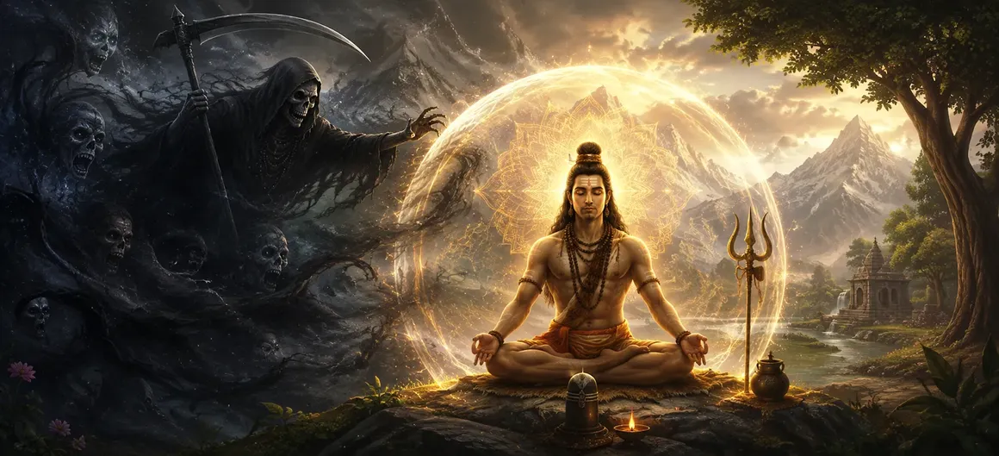

The Ways of Overcoming Kala
Moving forward from the diagnostic signs of mortal transience examined in Chapter 25, Chapter 26 of Uma Samhita illuminates The Ways of Overcoming Kala. Having established how time relentlessly governs the physical body, the scripture now presents an inspiring elevenfold path of spiritual practices, steadfast devotion, mantra meditation, and divine surrender through which a seeker can transcend the clutches of time and mortality.
This chapter details how union with Lord Shiva and the practice of sacred disciplines dismantle the fear of death, granting the soul eternal freedom from the wheel of samsara.
Core Topics in This Text (11 Pillars)
- 01 Understanding the Transcendental Nature Beyond Kala →
- 02 The Supreme Power of Unwavering Shiva Bhakti →
- 03 Sacred Mantra Japa and Divine Sound Resonance →
- 04 Cultivating Detachment from Material Illusions →
- 05 The Purifying Role of Righteous Action and Charity →
- 06 Meditation on the Formless Absolute (Shiva Tattva) →
- 07 Complete Surrender to the Will of Lord Shiva →
- 08 The Transformative Association with Holy Souls and Sages →
- 09 Observance of Sacred Vrats and Holy Fasting →
- 10 The Burning and Dissolution of Karmic Bonds →
- 11 Transitioning from Overcoming Kala to Attaining Shiva →
1. Understanding the Transcendental Nature Beyond Kala
This opening section explains that while Kala binds everything within the physical and mental universe, Lord Shiva exists completely beyond time as Mahakal. Understanding this distinction awakens the spiritual longing to seek refuge in the eternal.
Recognizing the transcendental reality frees the devotee from ordinary temporal anxieties.
2. The Supreme Power of Unwavering Shiva Bhakti
Uma Samhita declares that sincere, unbroken devotion (bhakti) to Lord Shiva is the most potent armor against the fearsome weapon of time, shielding the devotee with divine grace.
True devotion dissolves ego and aligns the individual will with the cosmic divine order.
3. Sacred Mantra Japa and Divine Sound Resonance
The text emphasizes the repetition of sacred mantras such as the Panchakshara Mantra (Om Namah Shivaya) as a powerful purifier that elevates consciousness and transcends ordinary material limitations.
Sound resonance aligns the subtle energy channels with eternal cosmic truths.
4. Cultivating Detachment from Material Illusions
Uma Samhita instructs seekers to let go of excessive attachment to transient worldly objects, relationships, and prestige, which act as anchors binding the soul to the suffering of temporal existence.
Detachment clears the internal vision for higher spiritual realization.
5. The Purifying Role of Righteous Action and Charity
Performing righteous deeds (dharma) and offering charitable support to the needy purify the mind and accumulate positive spiritual merits that ease the journey beyond physical life.
Selfless action breaks the heavy knots of selfish conditioning.
6. Meditation on the Formless Absolute (Shiva Tattva)
The scripture highlights deep meditation upon the formless, all-pervading consciousness of Lord Shiva as a supreme method for rising above bodily identification and temporal decay.
Meditating on the absolute essence reveals the immortal nature of the soul.
7. Complete Surrender to the Will of Lord Shiva
Uma Samhita teaches that abandoning personal ego and surrendering every action, desire, and outcome to Lord Shiva dissolves anxiety and grants inner peace amidst life's storms.
Surrender is the ultimate key to experiencing divine protection.
8. The Transformative Association with Holy Souls and Sages
Keeping company with enlightened sages and devoted souls provides guidance, inspires spiritual dedication, and shields the mind from negative worldly influences.
Satsang acts as a steady lighthouse in turbulent spiritual waters.
9. Observance of Sacred Vrats and Holy Fasting
Uma Samhita prescribes the observance of holy vows, such as Maha Shivaratri fasts and ritual worship, as disciplined acts of devotion that strengthen spiritual endurance against worldly temptations.
Vrats cultivate self-control and focus the mind firmly on the divine.
10. The Burning and Dissolution of Karmic Bonds
Through the grace of Lord Shiva and spiritual practices, accumulated karmas—the seeds of future births and suffering—are burnt down completely, rendering Kala powerless over the soul.
The dissolution of karma marks the true triumph over mortality.
11. Transitioning from Overcoming Kala to Attaining Shiva
Having detailed the comprehensive spiritual paths and disciplines for conquering Kala, Uma Samhita prepares to explore the ultimate destination of escaping death entirely and attaining absolute union with Lord Shiva in the next chapter.
This final transition elevates the seeker from the struggle against time to the blissful state of eternal liberation.
Spiritual Insight
Chapter 26 teaches us through eleven foundational pillars that conquering Kala is possible through unwavering devotion, sacred mantra japa, detachment, and surrender to Lord Shiva. By purifying the mind and burning karmic bonds, the soul attains supreme freedom.
Frequently Asked Questions
① How does Uma Samhita suggest a devotee can conquer Kala?
The text prescribes deep devotion, sincere repetition of holy mantras, adherence to righteous conduct, and total surrender to the grace of Lord Shiva.
② What role do spiritual disciplines play in transcending time?
Spiritual disciplines like meditation, austerity, and charity help purify the mind, severing worldly attachments that bind the soul to the wheel of time.
③ How does this chapter connect to the next discussion?
Having outlined the practical methods for overcoming Kala, it leads naturally into the ultimate state of escaping death and attaining absolute union with Lord Shiva.